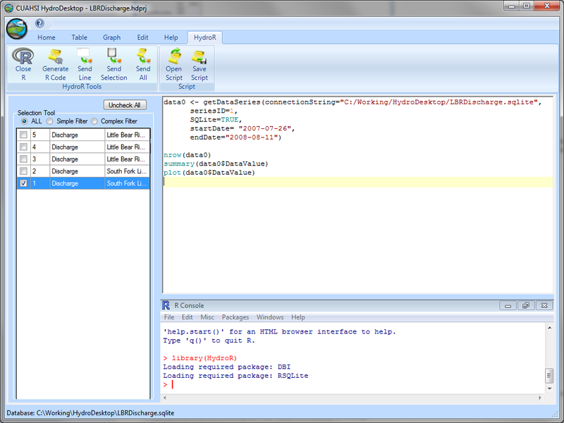
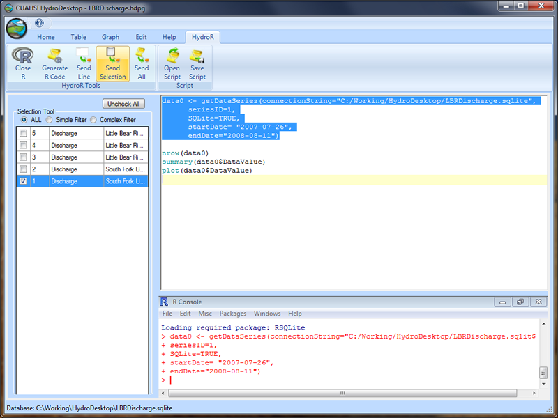

Executing R Code from the HydroR Script Editor
Use the following steps to execute R commands from the HydroR script editor:
- Open the R Console within HydroR by clicking on the “Start R” button on the HydroR ribbon. You will notice that the R Console opens within the HydroR tab.

NOTE: The first time you start the R console, you may get a pop-up dialog that asks you to navigate to the location of your R installation. Follow the instructions on the form. You may also have to choose a R CRAN Mirror site from which the HydroR extension will download a number of R packages to complete the installation. Choose a CRAN mirror site that his near you and then click “OK.”
- On the HydroR ribbon, you will notice that there are three buttons for sending code from the HydroR script editor to the R console for execution: 1) Send Line, 2) Send Selection, and 3) Send All. Send Line sends the currently selected line to the R Console, Send Selection sends all of the selected lines to the R Console, and Send All sends everything within the HydroR script editor to the R Console. Select a number of lines by clicking and dragging in the script editor and then click the “Send Selection” button to send them to the R console.

- You will notice that the lines from the script editor are sent to the R console and executed.